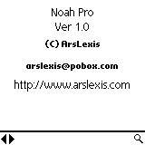
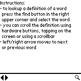

Note: if you have used the demo version of Noah Pro or Noah Lite, please remove it from your PalmPilot device before installing Noah Pro.
Noah Pro comes in one ZIP file that contains:
You need to install noah_pro.prc and at least one of the databases. There is no need to install more than one version of wn databases. Consult database comparison and choose the one that best suits your needs.
When you start program the first thing you see is an About screen followed (after some time of inactivity) by a screen with short info on using the program.
|  |  |
To find a word you can either press the spyglass icon or just start "graffiting" the word (which is faster since you save one tap). You will see the following screen:
You can browse the list of words by continuing to enter the word (the list will automatically scroll to the nearest matching word) or you can use the up/down arrows. Pressing Cancel button will take you back to the previous screen. To see a definition of a word either tap on it in the list or press "return" (in graffiti it's a move from upper right to lower left) to select the currently highlighted word. This will take you to the definition screen:
If a definition doesn't fit in one screen you can scroll it using hardware up/down buttons, by tapping
on the screen (tapping on the upper part scrolls up, on the lower part scrolls down) or by using
scrollbars. You can either scroll by line, half a page or the whole page. You can change that
using preferences.
You can move to next/previous word by using left/right arrows.
You can also access a history of a last few looked-up words by
using a pop-up list located next to a spyglass icon.
When Noah Pro starts it can either display the last accessed word, try to translate a word from the clipboard or start with a default About screen.
For both hardware buttons and tap scroll you can set whether you want to scroll by line, half a page, page or don't scroll at all.